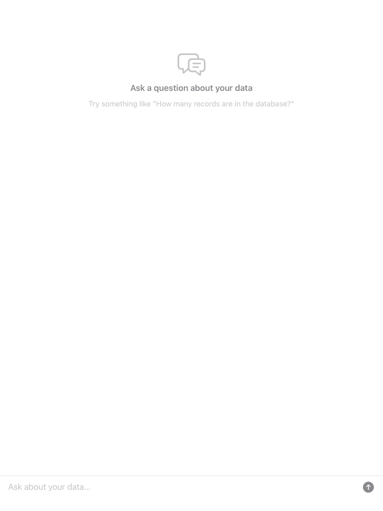
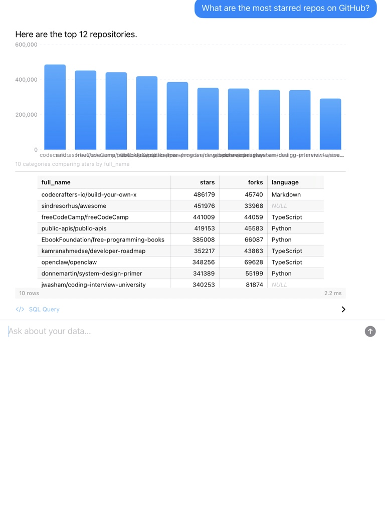
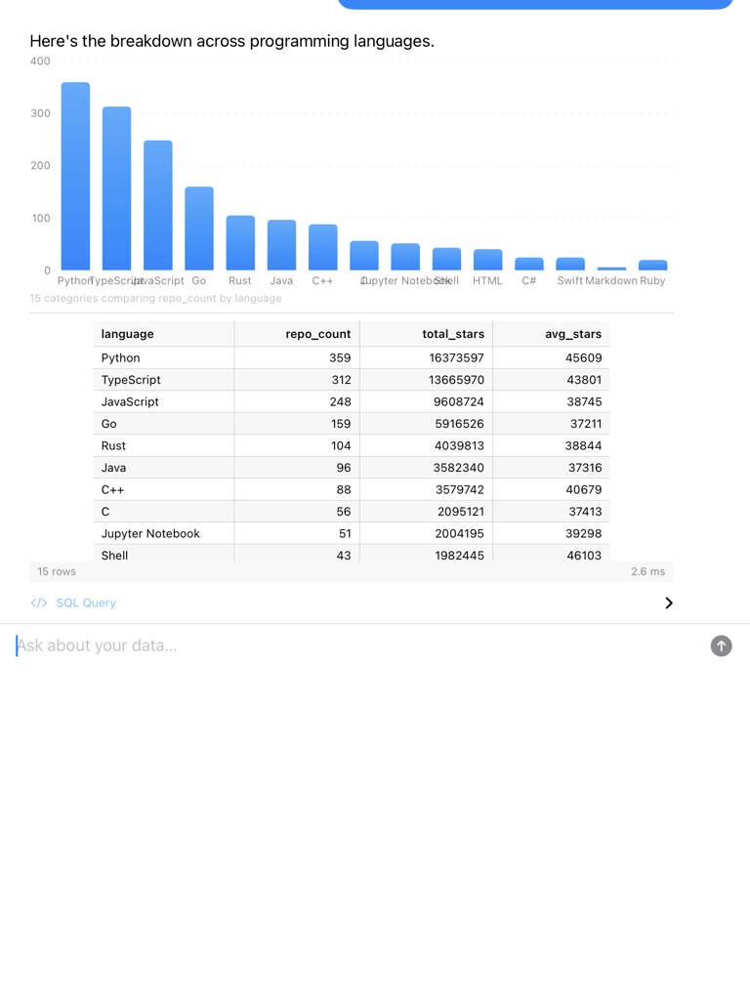
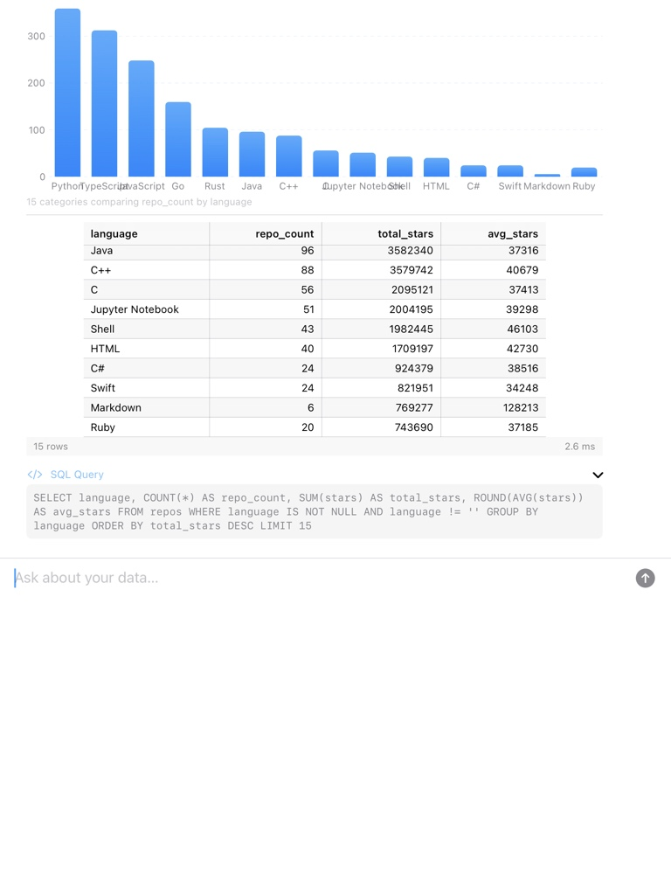
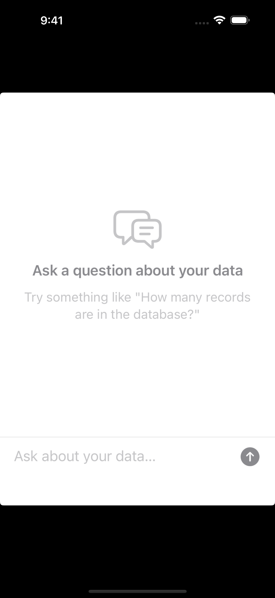

Your app already has a database. Now let your users ask it questions.
ChatEngine for custom UIDemo: a database of 2,000 GitHub repos with live star counts. Every number verifiable on github.com.




SELECT language, COUNT(*) ... GROUP BY language ORDER BY total_stars DESC

iPhone empty state — 9:41 status bar
Full demo flow: top repos → language breakdown (5.1 MB, ~3 min)
Powered by AnyLanguageModel (Hugging Face) — a unified interface for multiple LLM providers:
I got tired of building filter/search screens every time I needed to surface data from a SQLite database in an iOS app. So I made a SwiftUI view that lets users just type questions in English. DataChatView(databasePath: db, model: myLLM) It reads the schema, asks the LLM for SQL, runs it, and renders the results as tables and charts. Works with any .sqlite file — GRDB, Core Data, SwiftData, whatever. Read-only by default. Any LLM. MIT licensed.
1/4 I've been working on SwiftDBAI — a Swift package that adds natural language queries to any SQLite database.
You point it at a .sqlite file, give it an LLM, and it handles the rest: schema introspection, prompt building, SQL generation, safety validation, and rendering results as tables and charts.
2/4 Here's the entire integration:
DataChatView(
databasePath: path,
model: OpenAILanguageModel(apiKey: key),
allowlist: .readOnly
)
It reads your schema automatically — no annotations, no mapping files. I use GRDB under the hood for introspection and query execution.
3/4 The LLM layer uses AnyLanguageModel from Hugging Face, so you can swap between:
- OpenAI, Anthropic, Gemini
- Ollama or llama.cpp for local/private
- Apple Foundation Models on iOS 26
The interesting part is that read-only is the default. The allowlist validates every generated query before it touches your database.
4/4 For the demo I pointed it at a database of ~2,000 top GitHub repos with live star counts. The exact numbers change daily, so you can tell the results are coming from the database, not the LLM's training data.
There's also a headless ChatEngine if you want to skip the built-in UI and do your own thing.
Swift 6.1+, iOS 17+, MIT. github.com/...
SwiftDBAI: natural language queries for SQLite databases on iOS
I've been building iOS apps with SQLite (via GRDB) for a while, and one pattern keeps coming up: users want to find things in their data, and I keep building custom filter views, search screens, and report pages to let them.
Each query is its own UI. "Show me orders from last month" needs a date picker and a list view. "Which products sold the most?" needs a different screen. "How many customers are in California?" is another one. They all follow the same pattern — take a question, turn it into SQL, show the results — but each one is a bespoke piece of UI work.
So I built a library that does the generic version of this.
What it does
SwiftDBAI is a Swift package with two main entry points:
- DataChatView — a SwiftUI view you drop into your app. It provides a chat interface where users type questions in English and get back results as tables and charts.
- ChatEngine — a headless version for when you want to handle the UI yourself.
Both work the same way:
1. Read the database schema (tables, columns, types, foreign keys) via GRDB
2. Build a prompt that includes the schema and the user's question
3. Send it to an LLM to generate SQL
4. Validate the SQL against an allowlist (SELECT only, by default)
5. Execute the query and render results
6. Ask the LLM to summarize the raw data in plain English
The schema introspection is automatic. You don't annotate your models or write mapping files. Point it at any .sqlite file and it figures out what's there.
LLM providers
I'm using AnyLanguageModel from Hugging Face, which gives you a single interface across different LLM providers. You can plug in:
- Cloud models: OpenAI, Anthropic, Gemini
- Local models: Ollama, llama.cpp (data stays on device)
- On-device: Apple Foundation Models on iOS 26+
Switching providers is one line. The rest of the pipeline doesn't change.
I've tested it with GPT-4o, Claude Haiku, and Qwen 3 running locally through Ollama. They all work, though the quality of generated SQL varies — larger models handle JOINs and GROUP BY better, as you'd expect.
Safety
The default allowlist is read-only. No INSERT, UPDATE, DELETE, DROP, or ALTER will execute. This felt like the right default for a library that generates SQL from user input.
If you need writes, you can configure per-table policies:
allowlist: .custom(MutationPolicy(
tables: ["cart": .readWrite, "orders": .readOnly]
))
There's also a confirmation delegate for destructive operations if you enable them.
The demo
For the demo app, I needed data that was obviously coming from the database and not from the LLM's memory. I settled on GitHub star counts — I fetched the top 2,000 repos from the GitHub API and bundled them as a SQLite file.
The star counts change daily, so when the app says "codecrafters-io/build-your-own-x has 486,179 stars," you can open github.com and check. An LLM would give you a different (stale) number. That's the point.
Getting started
.package(url: "https://github.com/<org>/SwiftDBAI.git", from: "1.0.0")
import SwiftDBAI
DataChatView(
databasePath: myDatabase.path,
model: OpenAILanguageModel(apiKey: key),
allowlist: .readOnly,
additionalContext: "E-commerce app with orders, products, and customers."
)
The additionalContext parameter helps the LLM understand what the data represents. It's optional but improves the quality of generated SQL.
If you don't want the built-in chat UI:
let engine = ChatEngine(database: db, model: myLLM)
let response = try await engine.ask("How many active users this week?")
Works with any existing .sqlite file — GRDB, Core Data's backing store, SwiftData, or raw SQLite. No migration required.
Swift 6.1+ | iOS 17+ | macOS 14+ | visionOS 1+ | MIT License
Natural language queries for any SQLite database on iOS — one SwiftUI view
SwiftDBAI is a Swift package that adds a chat interface to any SQLite database. Point it at a .sqlite file (GRDB, Core Data, SwiftData, raw SQLite), give it an LLM, and users can ask questions in English. It reads the schema automatically, generates SQL, validates it against a read-only allowlist, and renders results as tables and charts. Works with OpenAI, Anthropic, Ollama, or local models. The demo uses live GitHub star counts so you can verify every result on github.com.
Dataset: 1,990 repos with 20K+ stars • Fetched April 5, 2026 via GitHub API • 680 KB SQLite